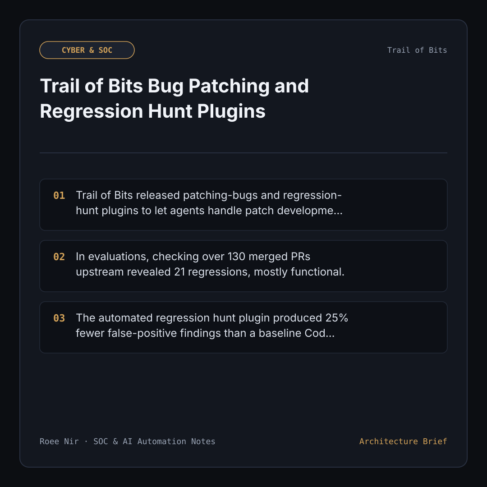

MANUAL PUBLISH PACK · Never auto-posted to LinkedIn without your click.
1. Visual Card (1080x1080)

2. פוסט מוכן + תגובה ראשונה
הסוכן תיקן את באג האבטחה בקוד, אבל איזה שבירות חדשות הוא הכניס בלי שנשים לב? השבוע פרסמו חוקרי Trail of Bits תוספים חדשים המיועדים להעברת פיתוח טלאים ובדיקות רגרסיה לסוכני AI, במסגרת יוזמת Patch the Planet המשותפת עם OpenAI. בבדיקה מקיפה שביצעו על למעלה מ 130 פול-רקוודס ממוזגים בפרויקטים של קוד פתוח כמו Scapy, החוקרים מצאו 21 רגרסיות שהוכנסו כתוצאה מהתיקונים. מתוכן, 16 היו רגרסיות פונקציונליות, אחת פגעה בביצועים וארבע פגעו בתהליכי הבנייה או הבדיקות, למרות שאף אחת מהן לא פרצה הגנת אבטחה קיימת. המנגנון החדש משתמש בסוכן שסורק את השינויים, מריץ בדיקות הוכחת היתכנות לפני ואחרי השינוי, ומסנן רעשי רקע כדי להעלות את דיוק הזיהוי ב 25 אחוזים לעומת פרומפט בסיסי סטנדרטי. זה לא אומר שאי אפשר לסמוך על כלי אוטומציה בפיתוח תוכנה. אבל זו תזכורת חדה לכך שתיקון אוטומטי חייב להיות מלווה במערכות בקרה דטרמיניסטיות. הסיפור הגדול כאן הוא ההבנה שבעיית האבטחה האמיתית בעידן ה AI היא לא רק כתיבת קוד זדוני, אלא ניהול הרגרסיות השקטות שנוצרות במהירות עצומה. איך צוות הפיתוח שלכם בודק טלאים שנוצרו על ידי מכונה? #AppSec #AIAutomation #CodeQuality #CyberSecurity #OpenSource #DevSecOps
תגובה ראשונה (לשמירה על חשיפה אורגנית):
לקריאת המחקר והפירוט הטכני המלא מתוך Trail of Bits: https://blog.trailofbits.com/2026/10/21/your-ai-agent-fixed-the-bug-but-what-else-did-it-change/